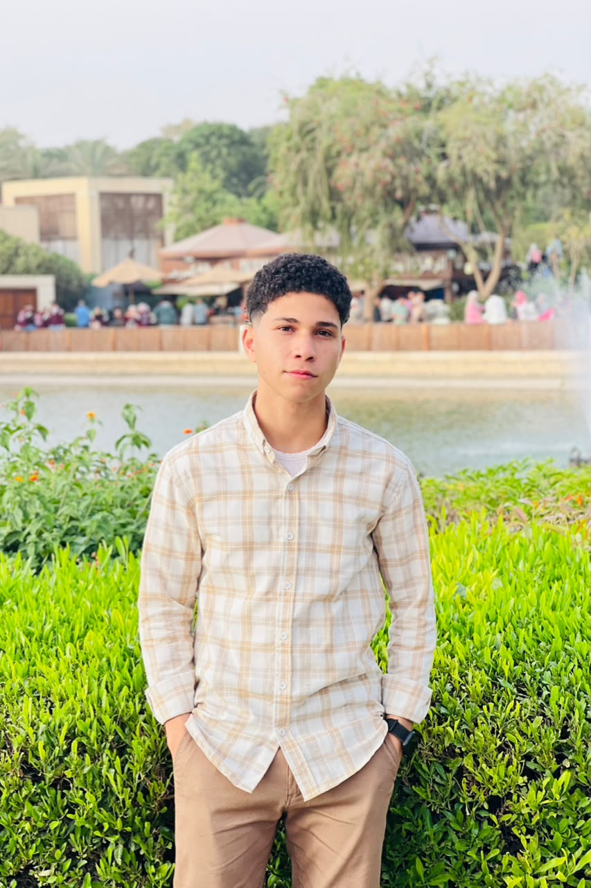

Cybersecurity
Learning to understand risk, protect systems, and think critically about how software behaves.
SECURITY MINDEDSTUDENT · BUILDER · CURIOUS BY NATURE
Abdelrahman Hamed
Cybersecurity Student & Developer
I’m a university student building practical skills and personal projects across cybersecurity, software, web development, and networking.

01 / A LITTLE ABOUT ME
I’m interested in the systems behind the screen: how they’re built, how they communicate, and how they can be made more secure.
As a university student, I’m developing my skills through ongoing study and hands-on personal projects. My interests span cybersecurity and software development, with room to explore the connections between web applications, desktop tools, and networks.
I value steady learning, careful problem-solving, and making ideas tangible. My goal is to grow a strong practical foundation and gain experience by building, testing, and improving.
Let’s connect02 / WHAT I'M EXPLORING
Four directions that shape what I’m learning and building. Specific tools will be added as projects verify them.
Learning to understand risk, protect systems, and think critically about how software behaves.
SECURITY MINDEDExploring the structure and interaction behind clear, useful web experiences.
WEB EXPERIENCESInterested in practical software that helps people complete everyday tasks.
PRACTICAL SOFTWAREStudying how devices connect and how traffic moves across a network.
CONNECTED SYSTEMS03 / SELECTED WORK
Personal and learning projects, described from the information currently available.
A restaurant website with menu browsing and a clear, straightforward user interface.
An Arabic desktop point-of-sale app for managing the menu, orders, inventory, sales, shifts and expenses, with customer records, receipt printing and JSON backup/restore.
MR MIX / A CLOSER LOOK
Explore the cashier, reporting, inventory, and team tools through real screenshots from the app.
A network learning lab covering VLANs, trunk links, inter-VLAN routing, DHCP, DNS, and router connectivity.
A small educational Python exercise implementing key scheduling, keystream generation, and XOR-based encryption with a round-trip demonstration.
Technologies are listed when confirmed from project files. Repository and demo links can be added when available.
04 / OPEN TO CONNECTION
Interested in what I’m learning or building? I’d be glad to connect.
GitHub profile link to be added